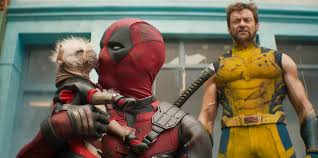

INTRODUCCION 
Wade Winston Wilson, más conocido como Deadpool,5 (también conocido en español como Masacre en los cómics de Forum y Panini) es un personaje ficticio, mercenario, supervillano67 y antihéroe,8 que aparece en los cómics publicados por Marvel Comics. Creado por el artista Rob Liefeld y el escritor Fabian Nicieza, Deadpool apareció por primera vez en New Mutants (vol. 1) #98 (1991).